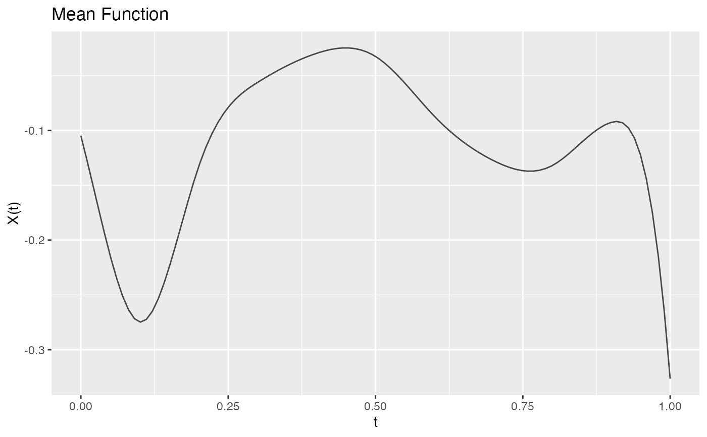

Estimates the mean function from irregularly sampled functional data.
Arguments
- x
An object of class
irregFdata.- argvals
Target grid for mean estimation. If
NULL, uses a regular grid of 100 points.- method
Estimation method:
"basis"(default, recommended) fits basis functions to each curve then averages;"kernel"uses Nadaraya-Watson kernel smoothing.- nbasis
Number of basis functions for
method = "basis"(default 15).- type
Basis type for
method = "basis":"bspline"(default) or"fourier".- bandwidth
Kernel bandwidth for
method = "kernel". IfNULL, uses range/10.- kernel
Kernel type for
method = "kernel":"epanechnikov"(default) or"gaussian".- ...
Additional arguments (ignored).
Details
The "basis" method (default) works by:
Fitting basis functions to each curve via least squares
Reconstructing each curve on the target grid
Averaging the reconstructed curves
This approach preserves the functional structure and typically gives more accurate estimates than kernel smoothing.
The "kernel" method uses Nadaraya-Watson estimation, pooling all
observations across curves. This is faster but may be less accurate
for structured functional data.
Examples
t <- seq(0, 1, length.out = 100)
fd <- simFunData(n = 50, argvals = t, M = 5, seed = 42)
ifd <- sparsify(fd, minObs = 10, maxObs = 30, seed = 123)
# Recommended: basis method
mean_fd <- mean(ifd)
plot(mean_fd, main = "Estimated Mean Function")

# Alternative: kernel method
mean_kernel <- mean(ifd, method = "kernel", bandwidth = 0.1)